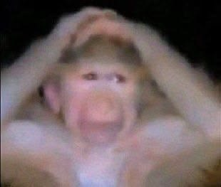
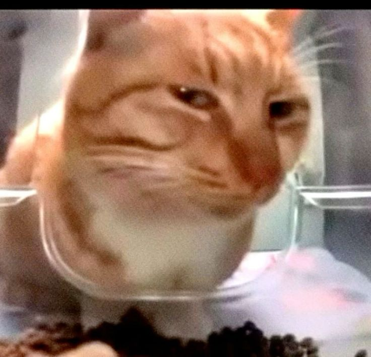
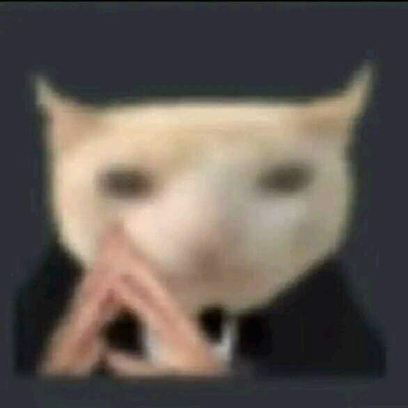
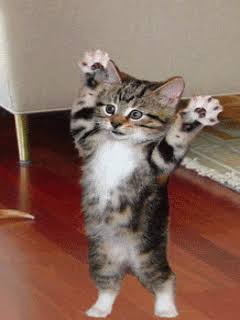
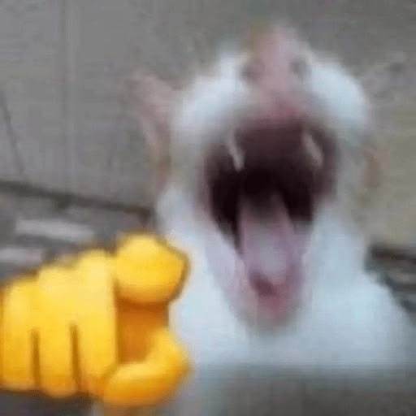
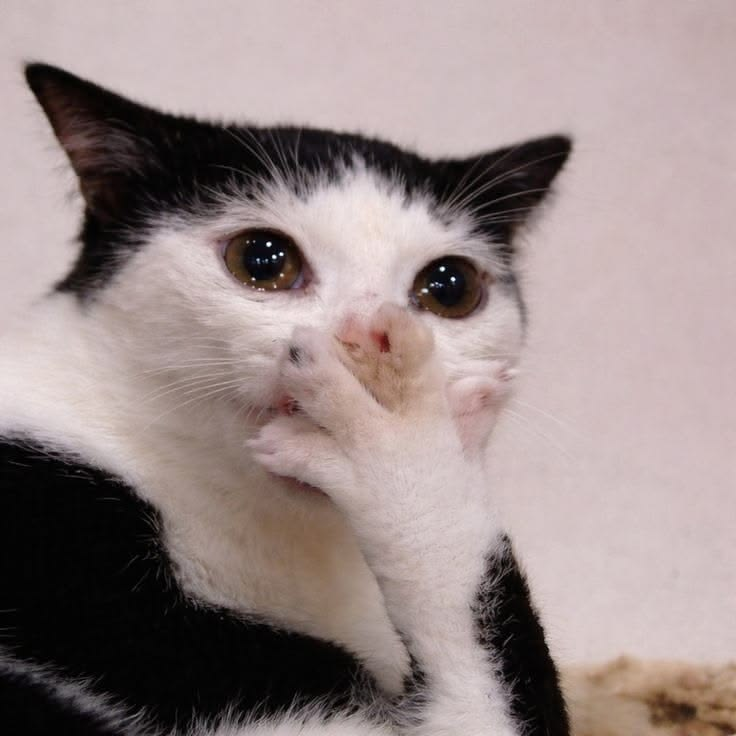
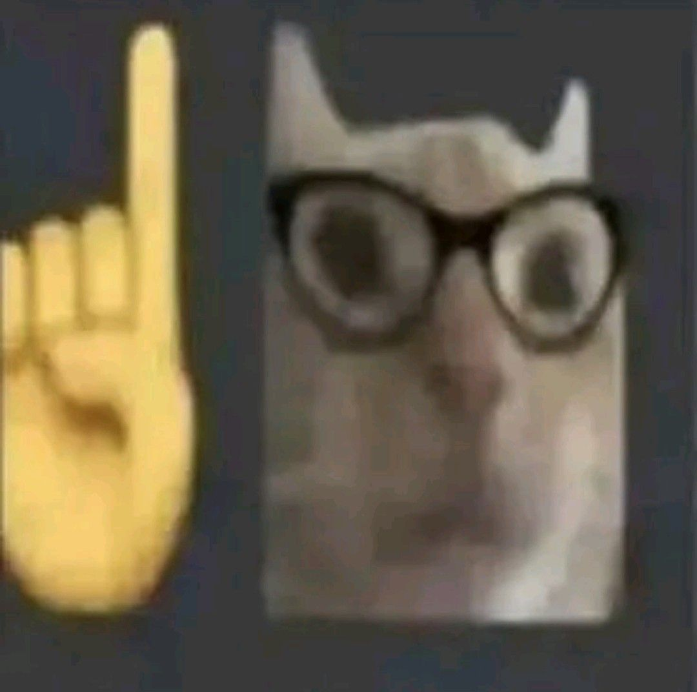
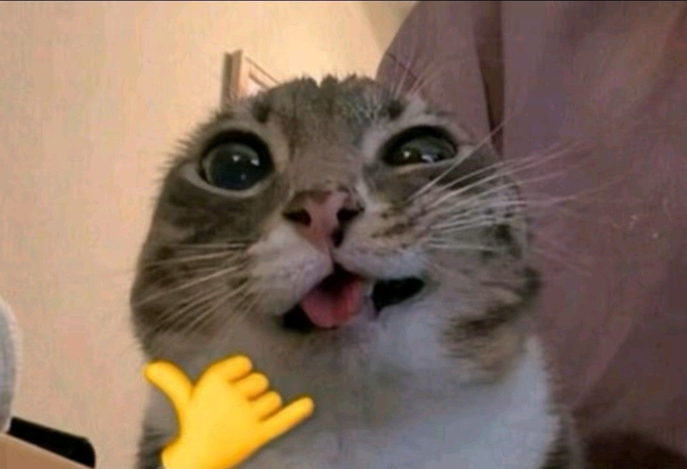

1 · İki el
Kafa üstü
İki el de başın çok üstünde birleşiyor.
Elini kameraya göster — hangi kedi çıkacağını dedektif panosu çözsün.
sen

sinsi (bekleniyor)
Kartlar öncelik sırasına göre — yukarıdan aşağı, ilk uyan kural kazanır. Şu an aktif olan kart yeşil çerçeve ile işaretlenir.

İki el de başın çok üstünde birleşiyor.

Başparmak ve işaret parmağı uçları iki elde de birbirine değiyor.

İki el görünüyor ama yukarıdaki iki kurala uymuyor — varsayılan iki-el hâli.

Başparmak hariç dört parmak kapalı — başparmağın yönü önemsiz.

Beş parmak da açık.

Sadece işaret parmağı açık — başparmak önemsiz.

Başparmak + serçe parmağı açık — diğerleri önemsiz.
El yok, ya da yukarıdakilerin hiçbirine uymuyor.
Kamera başlatılmadı.